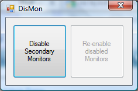

DisMon
Warning
DisMon should be considered as a work in progress. If you don't really need any of its functionality, then it is safer to not run it at all, as it can cause problems in some circumstances.
DisMon gives you some control over which monitors are disabled and which is the primary monitor when running another application.
This can be useful for example when running some games where when you move the mouse to the edge of the screen, the mouse moves to the other screen rather than scrolling the view.
DisMon can be used with Windows XP, Vista and Windows 7. (Windows 7 users who previously had to use DisMon7 should note that they should now use DisMon.)
If you run DisMon without any parameters, then you are presented with a GUI that allows you to manually disable and re-enable the secondary monitors. If you use Windows 7, then some of this functionality is already provided by the <Win>+P hotkey.
Usage
If you run this from the command line or as a shortcut, then the general format of the command is:
<Path to DisMon executable> [Options for DisMon] <Path to command to run> [<Parameters for command>]
DisMon options start with a '-'. There are 2 types of options: screen dependent options and general options. The screen dependent options have the screen number following the '- with '1' being the first screen. The screen number is then followed
by one or more characters indicating the options to apply to that screen. Currently there are only two options:
'd' disables the screen
'p' makes the screen the primary screen
So for example, to disable the first screen and to make the second screen the primary screen, the options to use would be: -1d -2p.
There are 2 general options:
'n' don't restore the screens on exit
'x' apply the changes and exit immediately
If no options are specified, then the default behaviour is to disable all secondary monitors.
The first parameter after any options is the name of an application to run. Any further parameters will be automatically passed to this application being run.
Before starting the application, DisMon will perform the actions specified by its options. When the application has finished running, it will restore the monitors to their original state.
Probably the easiest way to do this is to setup a shortcut to the application you want to run, then edit the shortcut and in the 'Target' insert the full executable path to DisMon and any options you need to specify.
For example, if DisMon is located in C:\tools and the application that you want to run with the secondary monitors disabled is C:\Supreme Commander\SupremeCommander.exe then you would set the target to:
C:\tools\DisMon.exe "C:\Supreme Commander\SupremeCommander.exe"or if you wanted to explicitly disable the second monitor, you could use:
C:\tools\DisMon.exe -2d "C:\Supreme Commander\SupremeCommander.exe"or if you wanted to run it on the second monitor and to disable the first monitor, you would use:
C:\tools\DisMon.exe -1d -2p "C:\Supreme Commander\SupremeCommander.exe"
Remember that any paths or arguments that contain spaces need to be enclosed within double quotes as in the above example.
Now whenever you run this shortcut, it will run the application after performing any actions specified in the options.
DisMon GUI
When you launch DisMon with no parameters it will show the following window:
This allows you to change which is the primary monitor and also to disable the secondary monitor in dual monitor setups. When DisMon is closed, the original state of the monitors will be restored.
Further Work
DisMon is still in the early stages of development. If there is any particular feature you want added, then please use the Dual Monitor Tools Open Discussion forum to leave your sugestion.
Known Problems
In Windows 7, if the primary screen is disabled (in the GUI this is equivalent to pressing the button in the bottom right), then later changes can lead to unpredictable results, eg. one of the screens can be permanently disabled until it is re-enabled using Windows (or your Graphics card) control panel.
In Windows XP, when another screen is made the primary screen, the taskbar is not moved onto that screen unless the original screen is disabled.